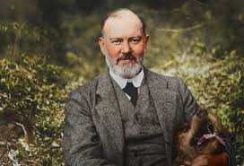

Roll Royce, Latest Car of the Year"
A little description and comparison about my three Favourite cars in Nigeria
_______WHITE COLOR ___________________________ARSH COLOR____________________________OWNER



RR
The luxury car brand is named Rolls-Royce, not "Rose Royce." It was founded by
Sir Henry Royce and Charles Rolls. The company name is a combination of their last names,
and the pair are credited with inventing the first car of the Rolls-Royce brand in 1904.
Sir Henry Royce.
Background: An engineer with a modest upbringing, Royce was known for his relentless pursuit of perfection and engineering excellence.
Contribution: He built his first car in 1904 and aimed to improve on the vehicles of the time. His car was later described by his partner as the best he had ever driven.
Picture of Sir Henry Royce
Range Rover Car of the Year
A little description and comparison about my three Favourite cars in Nigeria
_______WHITE COLOR ________________________ARSH COLOR_______________________OWNER


 R.R
R.R
Range Rover – Charles Spencer King (Spen King)
Charles Spencer King, a British engineer born in 1925, worked for the Rover Company.
Passionate about blending comfort with off-road ability, he developed the first Range Rover in 1970.
It was unique—a car that could drive through rough terrain like a Land Rover but also feel stylish and smooth on city roads.
His invention became a global icon of luxury SUVs, loved by royalty and adventurers alike.
Mercedes Benz Car of the Year
A little description about Mercedes Benz cars in Nigeria
_______BACK VIEW ________________________FRONT AND BACK_______________________OWNER


 M.B
M.B
Range Rover – Charles Spencer King (Spen King)
Charles Spencer King, a British engineer born in 1925, worked for the Rover Company.
Passionate about blending comfort with off-road ability, he developed the first Range Rover in 1970.
It was unique—a car that could drive through rough terrain like a Land Rover but also feel stylish and smooth on city roads.
His invention became a global icon of luxury SUVs, loved by royalty and adventurers alike.
Best Lamboghini Car of the Year
A little description about Lamboghini Cars in Nigeria
_______BACK VIEW ________________________FRONT AND BACK_______________________OWNER


 M.B
M.B
Range Rover – Charles Spencer King (Spen King)
Charles Spencer King, a British engineer born in 1925, worked for the Rover Company.
Passionate about blending comfort with off-road ability, he developed the first Range Rover in 1970.
It was unique—a car that could drive through rough terrain like a Land Rover but also feel stylish and smooth on city roads.
His invention became a global icon of luxury SUVs, loved by royalty and adventurers alike.
The above Profile was designed by Snshine on 25th of September, 2025 @ Dignity Technology Ltd.
Follow this address for more information:
Adeniran Sunday .O,
Matric No: EAUED000527
Department: Computer Science Education,
Level: 200 Level Student,
Emmanuel Alayande University Of Education Oyo,
Oyo-State,
Nigeria
Land your dream journey in just 3 months
Team with us @ Dignity Technology Ltd:
- Programming
- Data Science
- Data Analysis
- Product Design
- Website Design
- Graphic Design
- Software Development
Dignity Technology Ltd.